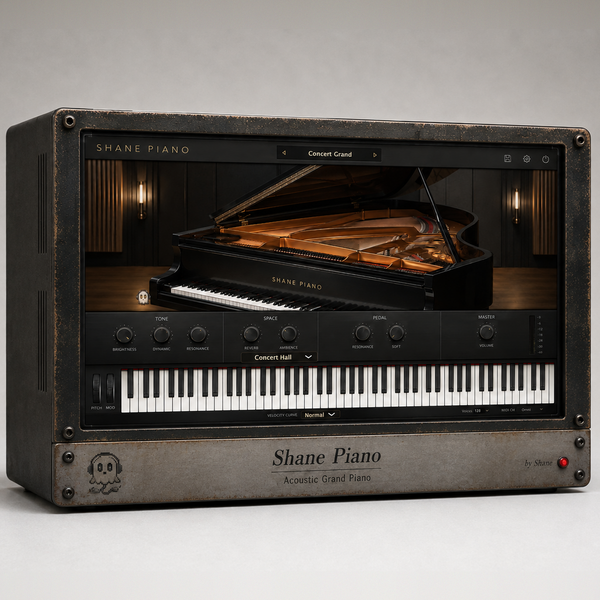

Acoustic Grand Piano
Buy $35Built-in 3-day free trial · Buy once, free updates forever · Secure checkout
A sampled grand piano — a Yamaha C5 taken with an AKG C414 stereo pair,
thirty zones deep and six velocity layers tall, with the strings ringing
in sympathy and the dampers landing where they should.
THE SAMPLES
· 30 zones at a minor third, 6 velocity layers each
· String resonance recorded separately, not synthesized
· Hammer and damper release noise on every key
· 48 voices, so the pedal can hold a whole phrase without stealing
TONE
· BRIGHTNESS lid closed to lid wide open
· DYNAMIC how hard you have to hit it
· RESONANCE how much the other strings answer
SPACE
· REVERB · AMBIENCE
· Four rooms — Studio · Concert Hall · Cathedral · Room
PEDAL
· RESONANCE what the sustain pedal opens up
· SOFT the una corda shift
PLAY
· VELOCITY CURVE soft · normal · hard
· Eight presets — Concert Grand, Studio Close, Recital Hall, Jazz Room,
Ballad, Pop Layer, Felt Mood, Cinematic
Watch the ghost beside the keys — it swells when you hit and fades with
the tail.
WHAT'S NEW IN 1.4
· Higher sample bandwidth, and a smaller download — the library is now lossless FLAC
· Licence registration added
REGISTRATION
· The plug-in runs unrestricted for a 3-day trial from first launch.
· Your licence key is on your Gumroad receipt and on the download page.
· Paste it into the plug-in once — it needs internet that one time, then works offline.
· Message me on Gumroad if you need it reset for a new machine.
FORMATS
macOS AU + VST3 + AAX (Pro Tools), Universal (Intel + Apple Silicon)
Windows VST3 + AAX (Pro Tools), 64-bit
INSTALL — WINDOWS
1. Unzip.
2. Right-click "Install.bat" and choose "Run as administrator".
It puts the VST3 in place and copies the samples where the plugin
looks for them. Both are needed — without the samples it stays silent.
3. Restart your DAW and rescan plugins.
INSTALL — macOS
1. Open the .pkg installer and follow the prompts.
2. Pick the formats you want (VST3 / AU / AAX).
3. Restart your DAW and rescan plugins.
Signed and notarized by Apple — no Terminal, no security workaround.
The installer asks for your admin password because the plug-ins go to /Library/Audio/Plug-Ins (available to every user on the Mac).
Signed with a Developer ID and notarized by Apple — no security
warnings, no Terminal commands.
Stuck, or something sounds off? Message me — I answer every one.
More plugins coming, posted gradually.
UPDATES
Buy once, updated forever. Every future build is free to you — Gumroad emails you when there is a new one. No subscription, no upgrade fee, no re-purchase.
FOLLOW ALONG
New plugins and what goes into them: